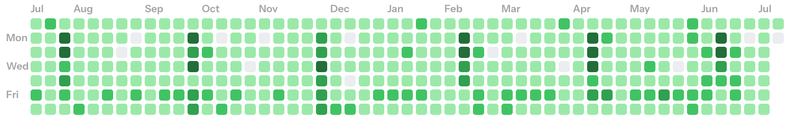
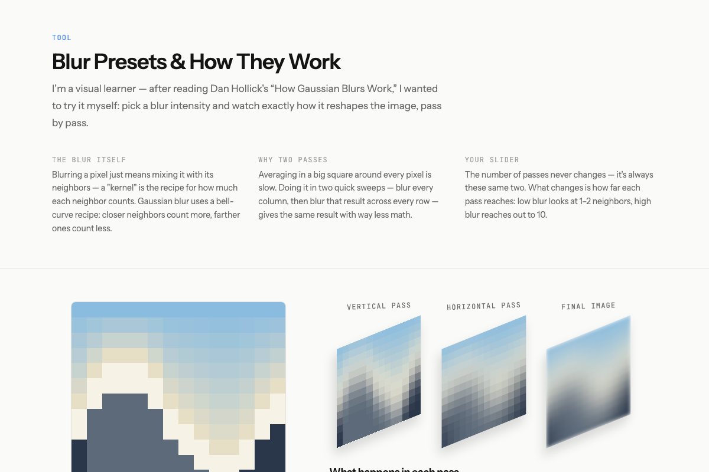
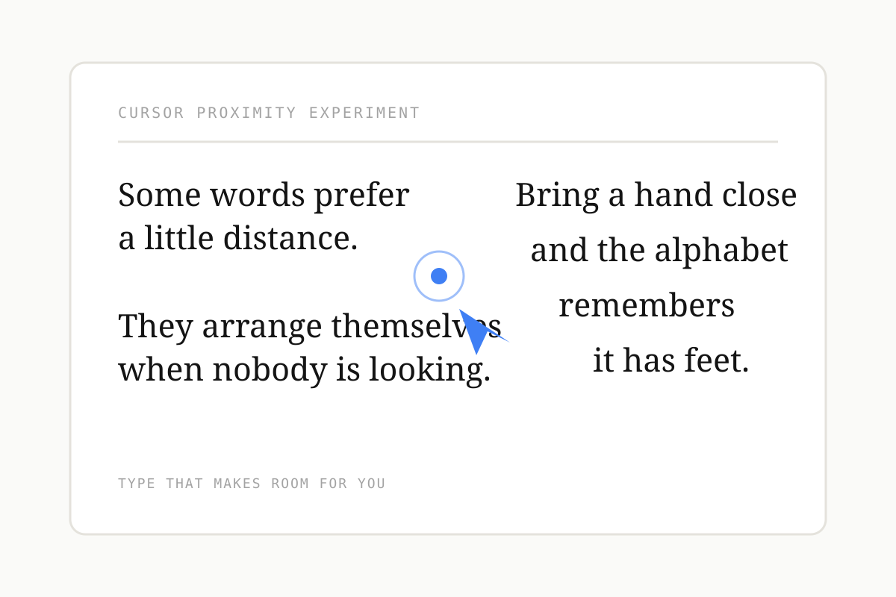
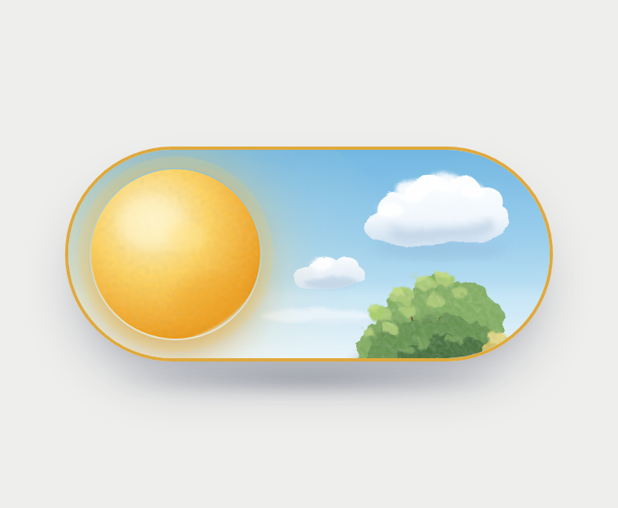
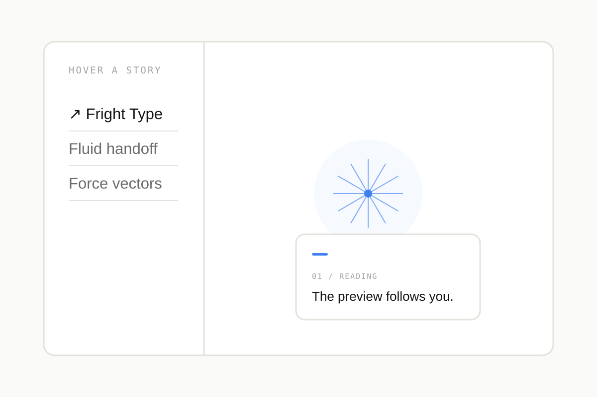
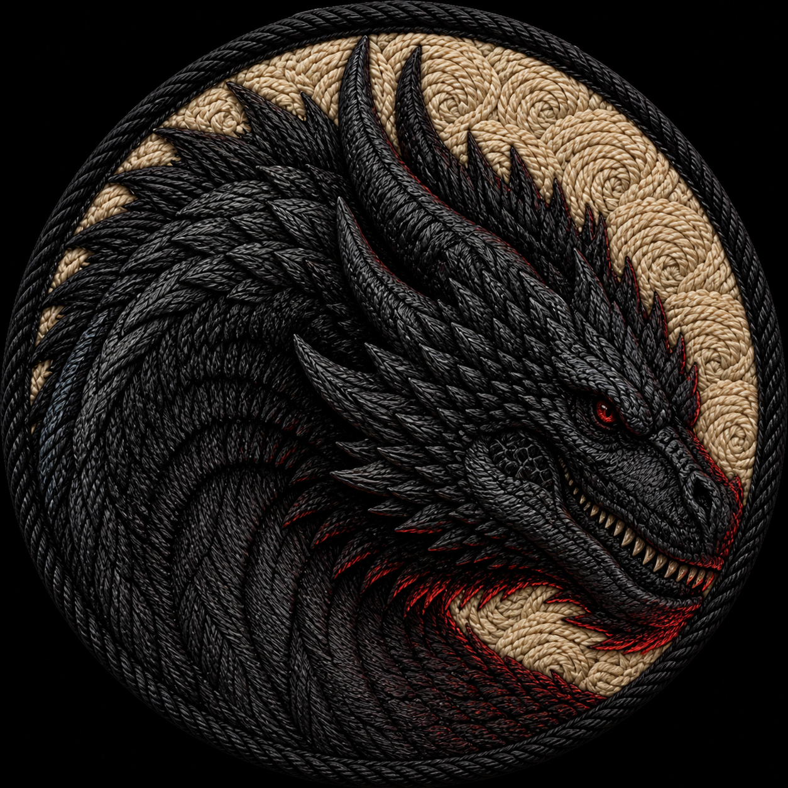

Playground
Built for fun
Small experiments outside client work — tools, toys, and interface ideas I wanted to build just to build them.

Pulse Grid
Turn any public GitHub contribution graph into an animated, recolorable chart — export as a GIF or an embeddable widget.

Blur Lab
An interactive explainer for separable two-pass Gaussian blur — tune the radius and watch the real per-pixel convolution math play out, pass by pass.

Shy Type
A two-column text experiment where each letter makes room for your cursor, then eases back into a readable paragraph when you leave.

Day / Night Toggle
A painterly, Ghibli-inspired take on a light/dark toggle switch — hand-drawn clouds, foliage, and a moon with real crater shading.

Menu Field
A menu-hover preview with an optional, tunable 30-vector force field that makes its pointer-driven motion easier to understand.

Threads of Fire
A tactile archive of ten dragons, reimagined as museum-quality embroidered badges with anatomy-specific threadwork.